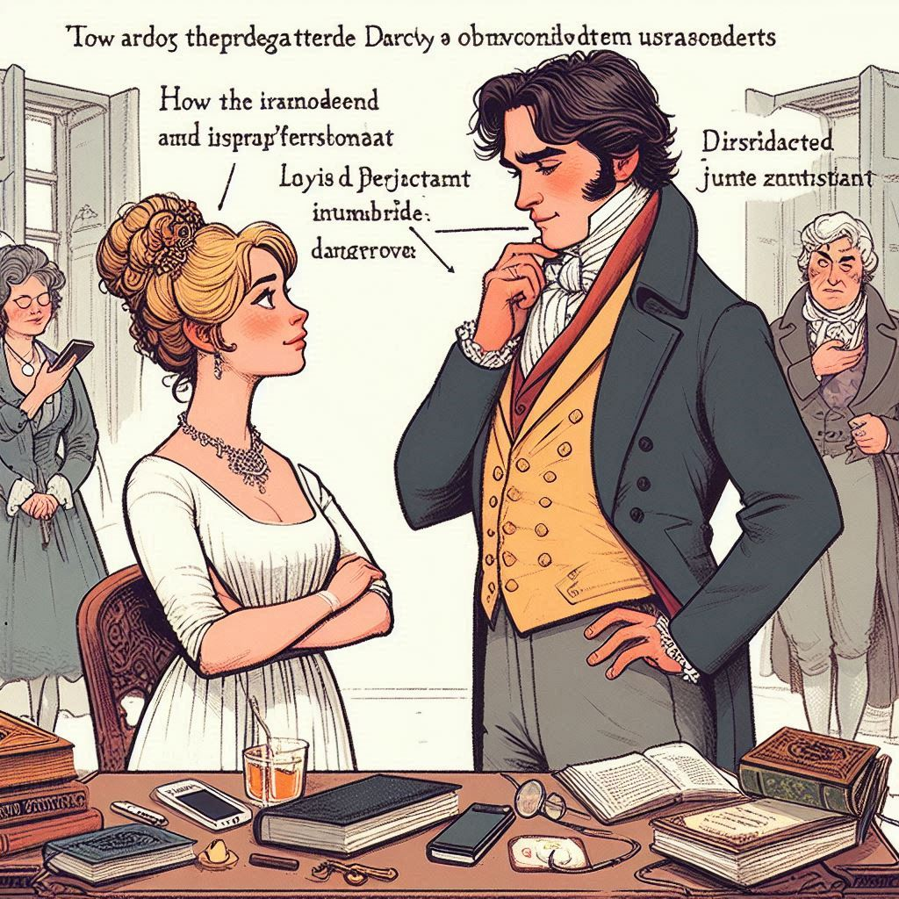

오만과 편견
목차
작가
제인 오스틴
출판일
1813년
감상평에 대한 AI그림
오만과 편견은 오만한 다아시와 편견을 가진 엘리자베스가 서로의 오해를 극복하고 성장하는 과정을 그린다. 두 사람은 상대를 통해 자신의 단점을 깨닫고 변화하며, 사랑은 이해와 존중 속에서 깊어진다는 것을 보여준다. 흥미로운 고전 로맨스 소설로 재미있게 읽었으며, 특히 다아시가 오만하게 고백했다가 엘리자베스에게 단호히 거절당하는 장면이 인상적이었다.

감상평에 대한 AI평가
✨ 주제 전달이 명확함
소설의 핵심 주제를 잘 정리했어! 오만과 편견을 극복하는 과정, 성장, 사랑의 본질을 명확하게 설명해서 책을 모르는 사람도 이해하기 쉬워.
✨ 인상적인 장면을 꼽은 점이 좋음
다아시의 첫 고백과 엘리자베스의 단호한 거절 장면을 언급한 게 흥미로워.
✨ 감상과 분석이 균형 잡힘
줄거리 요약과 개인적인 감상이 적절히 섞여 있어서 글이 탄탄해. 단순한 줄거리 나열이 아니라 작품을 깊이 이해하고 있다는 느낌이 들어!
✨ 감정을 조금 더 표현하면 좋을 듯
"재미있게 읽었다"라고 했는데, 어떤 점에서 재미있었는지 더 풀어주면 감상이 더 생생해질 것 같아. 예를 들어 문체, 캐릭터의 매력, 시대적 배경 등이 어떻게 와닿았는지 말해주면 더 풍부한 감상이 될 거야!